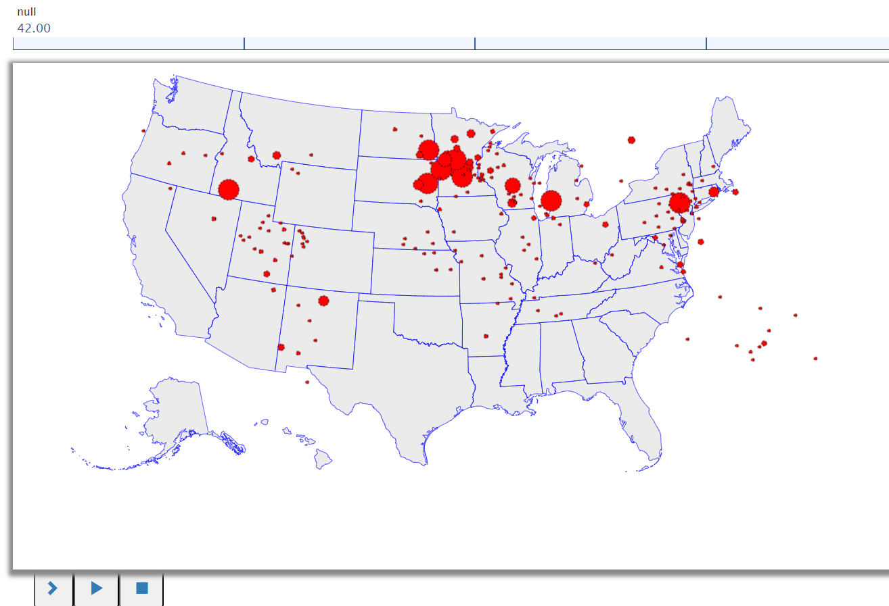

This program is designed to read COVID-19 confirmed cases data from a CSV file, process the data, and generate a graph using the BRIDGES library for visualization.

The purpose of this assignment is to learn to 1. Read COVID-19 confirmed cases data from a CSV file, handle CSV file parsing, and store the data in a suitable data structure. 2. Create a BRIDGES graph with a world map overlay to plot the COVID-19 case data for each country 3. Visualize through a a line chart the total cases for the 80 days
This program is designed to read COVID-19 confirmed cases data from a CSV file, process the data, and generate a graph using the BRIDGES library for visualization.